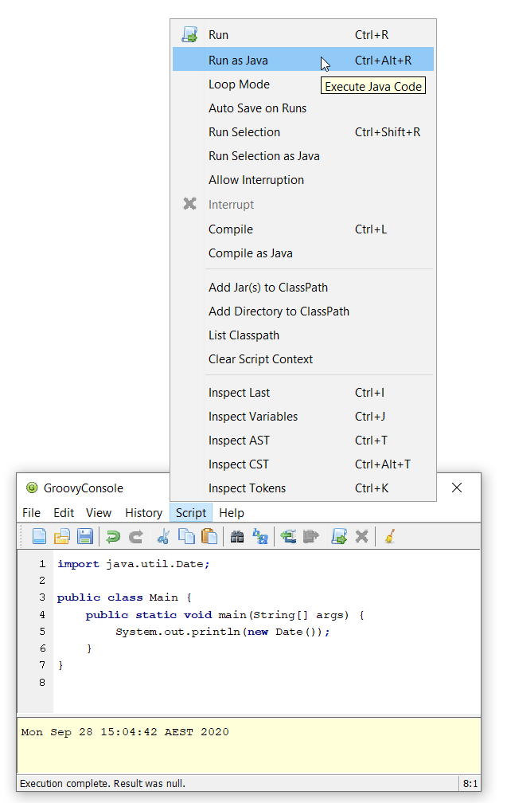

Release notes for Groovy 4.0
Groovy 4 builds upon existing features and streamlines various legacy options.
|
Important naming/structuring changes
Maven coordinate change
In Groovy 4.0, the groupId of the maven coordinates for Groovy have changed from org.codehaus.groovy
to org.apache.groovy. Please update your Gradle/Maven/other build settings appropriately.
Legacy package removal
The Java Platform Module System (JPMS) requires that classes in distinct modules have distinct package names (known as the "split packaging requirement"). Groovy has its own "modules" that weren’t historically structured according to this requirement.
Groovy 3 provided duplicate versions of numerous classes (in old and new packages) to allow Groovy users to migrate towards the new JPMS compliant package names. See the Groovy 3 release notes for more details. Groovy 4 no longer provides the duplicate legacy classes.
In short, time to stop using groovy.util.XmlSlurper and start using groovy.xml.XmlSlurper.
Similarly, you should now be using groovy.xml.XmlParser, groovy.ant.AntBuilder, groovy.test.GroovyTestCase
and the other classes mentioned in the prior mentioned Groovy 3 release notes.
Module changes for groovy-all
Based on user feedback and download statistics, we rejigged which modules are included in the groovy-all pom
(GROOVY-9647).
The groovy-yaml module is fairly widely used and is now included in groovy-all.
The groovy-testng module is less widely used and is no longer included in groovy-all.
Please adjust your build script dependencies if needed.
If you are using the Groovy distribution, no changes are required since it
includes the optional modules.
Legacy consolidation
Old parser removal
Groovy 3 introduced the new "Parrot" parser which supports lambdas, method references, and numerous other tweaks. In Groovy 3, You could still revert back to the old parser if you wanted. In Groovy 4, the old Antlr2 based parser is removed. Please use older versions of Groovy if you require the old parser.
Classic bytecode generation removal
For many versions, Groovy could generate classic call-site based bytecode or bytecode targeting the JDK7+ invoke dynamic ("indy") bytecode instructions. You could switch between them with a compiler switch and we had two sets of jars ("normal" and "-indy") built with and without the switch enabled. In Groovy 4.0, only bytecode using the latter approach can be generated. There is now one set of jars and they happen to be indy flavored.
Currently, the Groovy runtime still contains any necessary support for classes compiled using older versions of Groovy. Please use Groovy versions up to 3.x if you need to generate the older style bytecode.
This work was originally planned for Groovy 3.0, but there were numerous places
where "indy" code was noticeably slower than "classic" bytecode.
We have made numerous speed improvements (starting with GROOVY-8298)
and have some ability to tune internal thresholds (search the code base for
groovy.indy.optimize.threshold and groovy.indy.fallback.threshold).
That work gave us useful speed improvements, but we welcome further feedback
to help improve overall performance of the indy bytecode.
New features
Built-in type checkers
Groovy’s static nature includes an extensible type-checking mechanism. This mechanism allows users to:
-
selectively weaken type checking to allow more dynamic style code to parse static checking, or
-
strengthen type checking, allowing Groovy to be much stricter than Java in scenarios where that is desirable
So far, we know this feature has been used internally by companies (e.g. type-checked DSLs),
but we haven’t seen widespread sharing of type checker extensions.
From Groovy 4, we plan to bundle some select type checkers within the optional
groovy-typecheckers module,
to encourage further use of this feature.
The first inclusion is a checker for regular expressions. Consider the following code:
def newYearsEve = '2020-12-31'
def matcher = newYearsEve =~ /(\d{4})-(\d{1,2})-(\d{1,2}/This passes compilation but fails at runtime with a PatternSyntaxException
since we "accidentally" left off the final closing bracket.
We can get this feedback at compilation time using the new checker as follows:
import groovy.transform.TypeChecked
@TypeChecked(extensions = 'groovy.typecheckers.RegexChecker')
def whenIs2020Over() {
def newYearsEve = '2020-12-31'
def matcher = newYearsEve =~ /(\d{4})-(\d{1,2})-(\d{1,2}/
}Which gives this expected compilation error:
1 compilation error:
[Static type checking] - Bad regex: Unclosed group near index 26
(\d{4})-(\d{1,2})-(\d{1,2}
at line: 6, column: 19
As usual, Groovy’s compiler customization mechanisms would allow you to simplify application of such checkers, e.g. make it apply globally using a compiler configuration script, as just one example.
We welcome further feedback on additional type checker extensions to include within Groovy.
Built-in macro methods
Groovy macros were introduced in Groovy 2.5 to make it easier to create AST transforms and other code which manipulates the compiler AST data structures. One part of macros, known as macro methods, allows what looks like a global method call to be replaced with transformed code during compilation.
A bit like type checker extensions, we know this feature has been used in numerous places,
but so far, we haven’t seen widespread sharing of macro methods.
From Groovy 4, we plan to bundle some select macro methods within the optional
groovy-macro-library module,
to encourage further use of this feature.
The first inclusions assist with old-school debugging (poor man’s serialization?). Suppose during coding you have defined numerous variables:
def num = 42
def list = [1 ,2, 3]
def range = 0..5
def string = 'foo'Suppose now you want to print those out for debugging purposes.
You could write some appropriate println statements and maybe sprinkle in some
calls to format(). You might even have an IDE help you do that.
Alternatively, the NV macro method comes to the rescue:
println NV(num, list, range, string)which outputs:
num=42, list=[1, 2, 3], range=[0, 1, 2, 3, 4, 5], string=foo
Here, the NV macro method springs into action during the compilation process.
The compiler replaces the apparent global NV method call with an expression
which combines the names and toString() values of the supplied variables.
Two other variations exist. NVI calls Groovy’s inspect() method rather than
toString() and NVD calls Groovy’s dump() method. So this code:
println NVI(range)produces the following output:
range=0..5
And this code:
println NVD(range)yields:
range=<groovy.lang.IntRange@14 from=0 to=5 reverse=false inclusive=true modCount=0>
We welcome further feedback on additional macro methods to include within Groovy. If you do enable this optional module but want to limit which macro methods are enabled, there is now a mechanism to disable individual macro methods (and extension methods) GROOVY-9675.
JavaShell (incubating)
A Java equivalent of GroovyShell, allowing to more easily work with snippets of Java code.
As an example, the following snippet shows compiling a record (JDK14) and checking its toString with Groovy:
import org.apache.groovy.util.JavaShell
def opts = ['--enable-preview', '--release', '14']
def src = 'record Coord(int x, int y) {}'
Class coordClass = new JavaShell().compile('Coord', opts, src)
assert coordClass.newInstance(5, 10).toString() == 'Coord[x=5, y=10]'This feature is used in numerous places within the Groovy codebase for testing purposes. Various code snippets are compiled using both Java and Groovy to ensure the compiler is behaving as intended. We also use this feature to provide a productivity enhancement for polyglot developers allowing Java code to be compiled and/or run (as Java) from within the Groovy Console:

POJO Annotation (incubating)
Groovy supports both dynamic and static natures.
Dynamic Groovy’s power and flexibility comes from making (potentially extensive) use of the runtime.
Static Groovy relies on the runtime library much less. Many method calls will have bytecode
corresponding to direct JVM method calls (similar to Java bytecode)
while the Groovy runtime is often bypassed altogether.
But even for static Groovy, hard-links to the Groovy jars remain.
All Groovy classes still implement the GroovyObject interface (and so have methods like getMetaClass and invokeMethod)
and there are some other places which call into the Groovy runtime.
The @POJO marker interface is used to indicate that the generated class is more like a plain old Java object
than an enhanced Groovy object. The annotation is currently ignored unless combined with @CompileStatic.
For such a class, the compiler won’t generate methods typically needed by Groovy, e.g. getMetaClass().
This feature is typically used for generating classes which need to be used with Java or Java frameworks
in situations where Java might become confused by Groovy’s "plumbing" methods.
The feature is incubating. Currently, the presence of the annotation should be treated like a hint to the compiler to produce bytecode not relying on the Groovy runtime if it can, but not a guarantee.
Users of @CompileStatic will know that certain dynamic
features aren’t possible when they switch to static Groovy.
They might expect that using @CompileStatic and @POJO
might result in even more restrictions.
This isn’t strictly the case.
Adding @POJO does result in more Java-like code in certain places,
but numerous Groovy features still work.
Consider the following example. First a Groovy Point class:
@CompileStatic
@POJO
@Canonical(includeNames = true)
class Point {
Integer x, y
}And now a Groovy PointList class:
@CompileStatic
@POJO
class PointList {
@Delegate
List<Point> points
}We can compile those classes using groovyc in the normal way
and should see the expected Point.class and PointList.class files produced.
We can then compile the following Java code.
We do not need the Groovy jars available for javac or java,
we only need the class files produced from the previous step.
Predicate<Point> xNeqY = p -> p.getX() != p.getY(); // (1)
Point p13 = new Point(1, 3);
List<Point> pts = List.of(p13, new Point(2, 2), new Point(3, 1));
PointList list = new PointList();
list.setPoints(pts);
System.out.println(list.size());
System.out.println(list.contains(p13));
list.forEach(System.out::println);
long count = list.stream().filter(xNeqY).collect(counting()); // (2)
System.out.println(count);-
Check whether x not equal to y
-
Count points where x neq y
Note that while our PointList class has numerous list methods available
(size, contains, forEach, stream, etc.) courtesy of Groovy’s @Delegate transform,
these are baked into the class file, and the bytecode produced doesn’t call
into any Groovy libraries or rely on any runtime code.
When run, the following output is produced:
3 true Point(x:1, y:3) Point(x:2, y:2) Point(x:3, y:1) 2
In essence, this opens up the possibility to use Groovy as a kind of pre-processor similar to Lombok but backed by the Groovy language.
|
Record-like classes (incubating)
Java 14 introduced records as a preview feature.
As per this records spotlight article,
records "model plain data aggregates with less ceremony".
Groovy has features like the @Immutable transformation which already support
modeling data aggregates with less ceremony, and while these features overlap to some degree
with the design of records, they are not a direct equivalent.
Records are a slight re-mixing of the features of @Immutable with a few variations added to the mix.
Luckily for us, Groovy’s @Immutable is itself a meta-annotation (also known as annotation collector)
which combines more fine-grained features. It is relatively simple to provide a record-like re-mix
of those features and that is what Groovy 4 provides with its @RecordType transform.
It combines the following transforms/marker annotations:
@RecordBase
@ToString(cache = true, includeNames = true)
@EqualsAndHashCode(cache = true, useCanEqual = false)
@ImmutableOptions
@PropertyOptions(propertyHandler = ImmutablePropertyHandler)
@TupleConstructor(defaults = false)
@MapConstructor
@KnownImmutable
@POJOYou define and use a record-like class as follows:
@groovy.transform.RecordType
class Cyclist {
String firstName
String lastName
}
def richie = new Cyclist('Richie', 'Porte')This produces a class with the following characteristics:
-
it is implicitly final
-
it has a private final field
firstNamewith an accessor methodfirstName(); ditto forlastName -
it has a default
Cyclist(String, String)constructor -
it has a default
serialVersionUIDof 0L -
it has implicit
toString(),equals()andhashCode()methods
In future releases, we may provide some syntactic sugar to allow the above definition to be written like this:
record Cyclist(String firstName, String lastName) { } // possible future syntaxThis syntax is not currently supported. We are seeking feedback on the implementation details in the meantime and are keen to understand where our users might use records or record-like structures.
|
Groovy Contracts (incubating)
This optional module supports design-by-contract style of programming. More specifically, it provides contract annotations that support the specification of class-invariants, pre-conditions, and post-conditions on Groovy classes and interfaces. Here is an example:
import groovy.contracts.*
@Invariant({ speed() >= 0 })
class Rocket {
int speed = 0
boolean started = true
@Requires({ isStarted() })
@Ensures({ old.speed < speed })
def accelerate(inc) { speed += inc }
def isStarted() { started }
def speed() { speed }
}
def r = new Rocket()
r.accelerate(5)This causes checking logic, corresponding to the contract declarations, to be injected as required in the classes methods and constructors. The checking logic will ensure that any pre-condition is satisfied before a method executes, that any post-condition holds after any method executes and that any class invariant is true before and after a method is called.
This module replaces the previously external gcontracts project which is now archived.
GINQ, a.k.a. Groovy-Integrated Query (incubating)
GINQ supports querying collections in a SQL-like style.
from p in persons
leftjoin c in cities on p.city.name == c.name
where c.name == 'Shanghai'
select p.name, c.name as cityName
from p in persons
groupby p.gender
having p.gender == 'Male'
select p.gender, max(p.age)
from p in persons
orderby p.age in desc, p.name
select p.name
from n in numbers
where n > 0 && n <= 3
select n * 2
from n1 in nums1
innerjoin n2 in nums2 on n1 == n2
select n1 + 1, n2More examples could be found at GINQ examples
TOML Support (incubating)
Support is now available for handling TOML-based files including building:
def builder = new TomlBuilder()
builder.records {
car {
name 'HSV Maloo'
make 'Holden'
year 2006
country 'Australia'
homepage new URL('http://example.org')
record {
type 'speed'
description 'production pickup truck with speed of 271kph'
}
}
}and parsing:
def ts = new TomlSlurper()
def toml = ts.parseText(builder.toString())
assert 'HSV Maloo' == toml.records.car.name
assert 'Holden' == toml.records.car.make
assert 2006 == toml.records.car.year
assert 'Australia' == toml.records.car.country
assert 'http://example.org' == toml.records.car.homepage
assert 'speed' == toml.records.car.record.type
assert 'production pickup truck with speed of 271kph' == toml.records.car.record.descriptionOther improvements
GString performance improvements
GString internals were revamped to improve performance.
When safe to do so, GString toString values are now automatically cached.
While infrequently used, GStrings do permit their internal data structures to
be viewed (and even changed!). In such circumstances, caching is disabled.
If you wish to view and not change the internal data structures, you can
call a freeze() method in GStringImpl to disallow changing of the internal
data structures which allows caching to remain active.
GROOVY-9637
As an example, the following script takes about 10s to run with Groovy 3 and about 0.1s with Groovy 4:
def now = java.time.LocalDateTime.now()
def gs = "integer: ${1}, double: ${1.2d}, string: ${'x'}, class: ${Map.class}, boolean: ${true}, date: ${now}"
long b = System.currentTimeMillis()
for (int i = 0; i < 10000000; i++) {
gs.toString()
}
long e = System.currentTimeMillis()
println "${e - b}ms"Enhanced Ranges
Groovy has always supported inclusive, e.g. 3..5, and exclusive (or open on the right), e.g. 4..<10, ranges.
From Groovy 4, ranges can be closed, open on the left, e.g. 3<..5, right or both sides, e.g. 0<..<3.
The range will exclude the left or right-most values for such ranges.
GROOVY-9649
Support for decimal fraction literals without a leading zero
Groovy has previously required a leading zero for fractional values, but leaving off the leading zero is now also supported.
def half = .5
def otherHalf = 0.5 // leading zero remains supported
double third = .333d
float quarter = .25f
def fractions = [.1, .2, .3]
// can be used for ranges too (with a rare edge case you might want to avoid)
def range1 = -1.5..<.5 // okay here
def range2 = -1.5.. .5 // space is okay but harder for humans (1)
def range3 = -1.5..0.5 // leading zero edge case (1)
assert range3 == [-1.5, -.5, .5]-
A fractional value without a leading zero can’t appear immediately after the range
..operator. The three dots in a row would be confusing and similar to the varargs notation. You should leave a space (might still be confusing for humans readers) or retain the leading zero (recommended).
JSR308 improvements (incubating)
Groovy has been improving JSR-308 support over recent versions. In Groovy 4.0, additional support has been added. In particular, type annotations are now supported on generic types. This is useful for users of tools like the Jqwik property-based testing library and technologies like the Bean Validation 2 framework. Here is an example of a Jqwik test:
@Grab('net.jqwik:jqwik:1.5.1')
import net.jqwik.api.*
import net.jqwik.api.constraints.*
class PropertyBasedTests {
@Property
def uniqueInList(@ForAll @Size(5) @UniqueElements List<@IntRange(min = 0, max = 10) Integer> aList) {
assert aList.size() == aList.toSet().size()
assert aList.every{ anInt -> anInt >= 0 && anInt <= 10 }
}
}In earlier versions of Groovy, the @Forall, @Size, and @UniqueElements annotations
were handled, but the @IntRange annotation on the List generic type didn’t appear in the
generated bytecode and now does.
Here is a Bean Validation 2 framework example:
@Grab('org.hibernate.validator:hibernate-validator:7.0.1.Final')
@Grab('org.hibernate.validator:hibernate-validator-cdi:7.0.1.Final')
@Grab('org.glassfish:jakarta.el:4.0.0')
import jakarta.validation.constraints.*
import jakarta.validation.*
import groovy.transform.*
@Canonical
class Car {
@NotNull @Size(min = 2, max = 14) String make
@Min(1L) int seats
List<@NotBlank String> owners
}
def validator = Validation.buildDefaultValidatorFactory().validator
def violations = validator.validate(new Car(make: 'T', seats: 1))
assert violations*.message == ['size must be between 2 and 14']
violations = validator.validate(new Car(make: 'Tesla', owners: ['']))
assert violations*.message.toSet() == ['must be greater than or equal to 1', 'must not be blank'] as Set
violations = validator.validate(new Car(make: 'Tesla', owners: ['Elon'], seats: 2))
assert !violationsAgain, all annotations except the @NonBlank annotation on the List generic type
were previously supported, and now @NonBlank will appear in the bytecode too.
This feature is marked as incubating. The generated bytecode is not expected to change but some minor details of the AST representation of the annotations during compilation may change slightly before the feature leaves incubating status.
In addition, type annotations that appear in code, e.g. local variable types, cast expression types, catch block exception types, are still work in progress.
On-going work
Enhanced switch (under investigation)
Groovy has always had a very powerful switch statement. The statement could be made more powerful, e.g. support destructuring, and could be supported in contexts where expressions are expected.
As inspiration, Java has made, or is investigating future enhancements including switch expressions and other related enhancements: JEP 354: Switch Expressions (Second Preview) JEP 361: Switch Expressions JEP 405: Record Patterns & Array Patterns (Preview) JEP 406: Pattern Matching for switch (Preview) We should investigate these proposals both in terms of enhancing the existing Groovy switch but also in terms of deciding which syntax from Java we might like to support in the future.
Other languages like Python are also improving their switch statements: PEP 622 — Structural Pattern Matching. We should investigate whether any features of their design make sense for Groovy’s dynamic nature.
As an example of destructuring, instead of the following existing code:
def make3D(pt) {
switch(pt) {
case Point3D:
return pt
case Point2D:
return new Point3D(pt.x, pt.y, 0)
case List:
def (x, y, z) = pt
if (x == 0 && y == 0 && z == 0)
throw new IllegalArgumentException("Origin not allowed")
return new Point3D(x, y, z)
...
}
}You could use something like:
def make3D(pt) {
switch(pt) {
case Point3D:
return pt
case Point2D(x, y):
return new Point3D(x, y, 0)
case [0, 0, 0]:
throw new IllegalArgumentException("Origin not allowed")
case [x, y, z]:
return new Point3D(x, y, z)
...
}
}An example of guarded patterns being considered for Java:
static void testTriangle(Shape s) {
switch (s) {
case null ->
System.out.println("Null!");
case Triangle t && (t.calculateArea() > 100) ->
System.out.println("Large triangle");
case Triangle t ->
System.out.println("Small triangle");
default ->
System.out.println("Non-triangle");
}
}Another destructuring example:
int eval(Expr n) {
return switch(n) {
case IntExpr(int i) -> i;
case NegExpr(Expr n) -> -eval(n);
case AddExpr(Expr left, Expr right) -> eval(left) + eval(right);
case MulExpr(Expr left, Expr right) -> eval(left) * eval(right);
default -> throw new IllegalStateException();
};
}We should consider the currently proposed nested record pattern when exploring our destructuring options, e.g.:
static void printColorOfUpperLeftPoint(Rectangle r) {
if (r instanceof Rectangle(ColoredPoint(Point p, Color c), ColoredPoint lr)) {
System.out.println(c);
}
}Other Java-inspired enhancements
-
Module definitions written in Groovy (i.e. module-info.groovy) GROOVY-9273
-
Use of "_" (underscore) for unused parameters (see "Treatment of underscores" in JEP 302: Lambda Leftovers)
Other breaking changes
-
Numerous classes previously "leaked" ASM constants which are essentially an internal implementation detail by virtue of implementing an
Opcodesinterface. This will not normally affect the majority of Groovy scripts but might impact code which manipulates AST nodes such as AST transforms. Before compiling with Groovy 4, some of these may need one or more appropriate static import statements added. AST transforms which extendAbstractASTTransformationare one example of potentially affected classes. (GROOVY-9736). -
ASTTestpreviously hadRUNTIMEretention but now hasSOURCEretention. We know of no users making use of the old retention but are aware of various issues keeping the old value. GROOVY-9702 -
There were some inconsistencies with JavaBean property naming conventions for various edge cases, e.g. for a field with a name being a single uppercase
Xand having agetXaccessor, then the field was given priority over the accessor. GROOVY-9618 -
Numerous mostly internal data structure classes, e.g. AbstractConcurrentMapBase, AbstractConcurrentMap, ManagedConcurrentMap were deprecated and their usage replaced with better alternatives. This should be mostly invisible but some changes might impact users using internal Groovy classes directly. GROOVY-9631
-
We bumped our Picocli version. This resulted in minor formatting changes of some CLI help messages. We recommend not relying on the exact format of such messages. GROOVY-9627
-
We are currently attempting to improve how Groovy code accesses private fields in certain scenarios where such access is expected but problematic, e.g. within closure definitions where subclasses or inner classes are involved (GROOVY-5438). You may notice breakages in Groovy 4 code in such scenarios until this issue is progressed. As a workaround in the meantime, you may be able to use local variable outside a closure to reference the relevant fields and then reference those local variables in the closure.
-
Earlier Groovy versions unintentionally stored the constants -0.0f and -0.0d to be the same as 0.0f and 0.0d respectively. This only applied to explicit constants, i.e. it didn’t apply to calculations which resulted in positive or negative zero. This also meant that certain comparisons of positive and negative zero returned true in cases where they should have been different, and calling
uniquemight have resulted in a set containing just positive zero instead of both positive and negative zero (the correct answer as per IEEE-745). Depending on whether you are using primitive or wrapper floating point variants, you may or may not be affected. Consider usingequalsIgnoreZeroSignand the booleanignoreZeroSignconstructor variant toNumberAwareComparatorif you are affected and desire the old behavior. These modifications have also been back-ported to Groovy 3, so consider using them in Groovy 3 code instead of relying on the old behavior so that your code can work correctly across versions. The fix itself hasn’t been back-ported to avoid breaking existing code relying on the unintended flawed behavior.
Bug fix: GROOVY-9797
Improved documentation and helper methods: GROOVY-9981
JDK requirements
Groovy 4.0 requires JDK10+ to build and JDK8 is the minimum version of the JRE that we support. Groovy has been tested on JDK versions 8 through 16.
More information
You can browse all the tickets closed for Groovy 4.0 in JIRA.